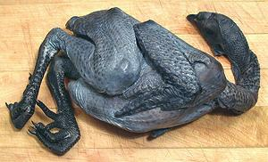

This small Asian chicken possibly originated in China, or maybe farther south, but the first written record of them is in the journals of Marco Polo. Silkies are unlike any other chicken. They come in various colors, white and black being most common, but their feathers are like soft fur. This is because of a recessive gene - some dinosaurs had feathers of this sort. The skin under those soft feathers is blue-black, the bones are black and even the flesh is dark and bluish. They have five toes rather than four as found on all but a few other odd types of chicken.
Silkies grown in North American are bantam varieties that can grow to 2 pounds at full maturity, but they're generally marketed at 1 to 1-1/2 pounds. In Europe, larger silkies are grown that can reach 4 pounds when fully mature. They are not particularly good egg layers because as soon as they have a few eggs they want to settle down and hatch them. Good layers are bred to not want to be bothered with hatching.
Silkies are very tame and gentle, making good pets. Hens are often assigned to hatching the eggs and tending the chicks of less attentive birds. They are, however, also widely eaten in East and Southeast Asia and are considered to have strong medicinal powers. They are now grown for the market in North America, but they'll set you back a pretty penny - and many people here think they're just too cute to eat.
More on Chickens.
 This is what you get when you cut open the vacuum package - yup, looks a whole lot like a dead chicken. If you have a problem with that, be aware - it gets worse. Not only is the skin black, so are the bones, and the flesh is blue-gray to blue-brown. The inside cavity is coal black.
These birds are most noted for use in Chinese tonic soups, combined with a number of medicinal herbs and roots. They are most often prepared for new mothers right after giving birth. Silkies are also braised and stewed in various ways. They are not used for stir fries and other briefly cooked dishes because they are tougher than regular chickens. Aside from China these chickens are eaten in Southeast Asia and to a lesser extent in Korea and Japan.
Because silkies are expensive to raise, chicken breeders are attempting to develop more productive, normally feathered chickens with the black flesh gene. None are currently marketed, and it's doubtful they will be accepted as having the same medicinal properties as the silkie.
Despite what you're told by the US FDA, the best and safest way to thaw birds (any size) is in cold water, either in their sterile vacuum pack or with frequent changing of the water. This method is approved by the USDA for commercial and institutional establishments.
In Asian cooking, most chickens are skinned before cooking, but these are done skin-on. After all, when you're paying that much extra for the skin color you don't want to throw it out - and unlike normal domestic chickens there is almost no fat under the skin.
bd_chksilkz 090607 - www.clovegarden.com